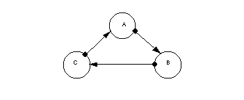
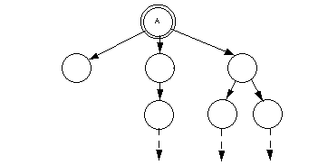
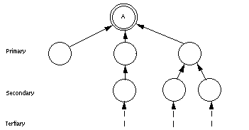
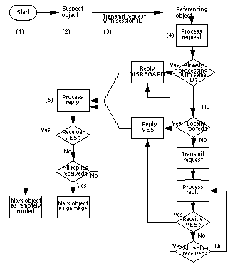

The Electric Communities Distributed Garbage Collector
Electric Communities has developed a distributed garbage collector that identifies and collects garbaged objects in a distributed network, especially those involved in cycles. It uses a unique technology that can identify these cycles without having to check redundant relationship paths between the objects; this makes it faster and more efficient than other garbage collectors. The EC Distributed Garbage Collector works in conjunction with the local garbage collector on each user's machine, providing a multi-tiered approach to garbage collection that can work with any distributed object system.
In the object-oriented world, garbage collection is a process that effectively deletes obsolete objects from machine memory. An object becomes obsolete when it is no longer required or referenced by any other existing object. However, these obsolete objects continue to tie up the machine's memory. Accordingly, identifying and collecting these objects is important to maximize the efficient operation of the machine; if collection of these objects lags too far behind their obsolescence, overall machine performance can degrade.
Current solutions to object garbage collection are quite efficient when all the objects are located on one machine. However, they are not nearly as effective for a system where objects on different machines are referencing each other, especially when trying to identify cycles of objects spanning multiple machines. In contrast, the EC Distributed Garbage Collector (DGC) provides an economical solution to marking these obsolete cycles of objects and reclaiming resources among the network. It works with any system of distributed objects.
Terms used in this document
This document presents a summary of the DGC technology, which is based on identifying and collecting cycles of objects. It uses the following terms:- Rooted object. This is an object that is recognized as
persistent, and therefore should not be collected. An example in Java is the
top-level object containing the main function code.
- Locally rooted object. This is an object referenced by a rooted
object on the same machine.
- Remotely rooted object. This is an object referenced only by
objects in remote machines, and all references originate from one or more
locally rooted objects.
- Cycles of objects. A cycle of objects involves two or more
objects that reference each other.
FIGURE 1. A simple cycle of objects. Object A refers to object B, which refers to object C, which in turn refers back to object A.
 - Forward reference graph. This is the hierarchical "layout" of a
rooted object and all the objects that the rooted object references. It
includes all branches of objects that the rooted object refers to, directly
or indirectly.
FIGURE 2. A forward-reference graph of a rooted object A, containing all objects A refers to, either directly or indirectly.
 - Inverse reference graph.This is the inverse of a
forward-reference graph, depicting a backward chain of objects that
reference an object. These objects can exist on other machines.
FIGURE 3. An inverse reference graph for object A. For purposes of this document, the first level of objects referring to A is called the primary level. These objects in turn are referenced by other objects; this is A's secondary level, and so on.

Catching cycles of distributed objects
To maintain optimal performance, the system needs to identify cycles of objects for garbage collection. By definition, a cycle of objects becomes a candidate for garbage collection when none of the objects represent a rooted object, either local or remote.Collecting obsolete cycles is important because they can:
- Maintain unnecessary connections that could be shut down. This is
especially true for implicit connections, where 1) an object A is implicitly
connected to an object C through an object B, and 2) object B then
disconnects. This leaves object A with a now unnecessary connection to
object C.
- Consume resources such as memory and disk space.
- Cause network traffic; even though objects are garbage, they can still
send messages to each other.
- Directly affect scalability, performance and reliability of service
servers. If a specific event generates some cyclical trash, it would not
take many of those events to fill up a server, since they will be constantly
accumulating. Taking the server off-line to remedy the situation could be
unacceptable in a commercial system.
- Mark-and-sweep solutions must first poll every object on every machine
before any object can be declared garbage. This is expensive in a networked
environment, with the expense increasing in direct proportion to the number
of machines on the network.
- Reference counting systems do not even check for cycles of objects at all.
How the DGC works
A DGC process uses the following algorithm.| FIGURE 4. Flow
of a DGC process.
|
|  |
- Process is triggered. The garbage collection process can be
activated by several events:
- An object is detected in the network's suspect list (see the following
step).
A preset time period has expired.
An asynchronous event occurs, such as when available memory becomes critical.
- An object is detected in the network's suspect list (see the following
step).
- Scan suspect object list. The DGC checks to see if there are any
objects in the suspect object list. An object A can become suspect in two
different ways:
- A locally rooted object with remote references both from and to other
objects becomes suspect when it no longer is locally rooted.
A remotely rooted object becomes suspect when it loses one or more of its remote references.
- A locally rooted object with remote references both from and to other
objects becomes suspect when it no longer is locally rooted.
- Transmit rooted-status request to referring objects. If an object
A is marked as suspect, the DGC gives it a unique session identifier. It
then sends a message from object A to all the objects in the primary level
of A's inverse reference graph (that is, all remote objects directly
referring to A--see the inverse reference graph at the beginning of this
document for a visual representation), tagging the message with the
identifier. This message asks each object if it is locally rooted.
- Referencing objects process request. A referencing object B
processes the root-status request according to the following rules:
- If object B is already processing a request with the same identifier,
it knows the request is redundant, and returns a DISREGARD to object A.
If object B is locally rooted, it returns a YES to object A.
If object B is not locally rooted, it forwards the requests in turn to all of the objects in its branch of A's inverse reference graph; that is, the objects in A's secondary level that directly reference B. If these secondary objects are not locally rooted, they repeat the request process to their referencing objects in A's tertiary level, and so on.
While B is waiting for its request to resolve, it might receive the same request message from another object. If this message has the same identifier, B knows the request is redundant, and returns a DISREGARD to object A.
If B receives replies from all its referenced objects and none of them are locally rooted, it returns a DISREGARD to object A.
- If object B is already processing a request with the same identifier,
it knows the request is redundant, and returns a DISREGARD to object A.
- DGC processes all replies to the suspect object. The DGC
processes the message replies according to the following rules:
- If object A received a YES from any of its referenced objects, the DGC
marks it as remotely rooted, and does not collect it.
If object A receives replies from all its objects and none of them are locally rooted, the DGC marks it as garbage.
A major feature of this algorithm is the DISREGARD message. A DISREGARD signals that a particular object is already processing a root status request with the same ID number. Therefore, the message does not need to be forwarded along that particular branch of the suspect object's inverse reference graph. This lets the DGC know that it can disregard that particular branch during the evaluation process. Not having to check redundant object cycle paths can significantly reduce the number of messages the DGC sends across the network.
Implementation
The DGC works in conjunction with the local garbage collection system. Its primary focus is on identifying/collecting cycles spanning multiple machines, and presumes that each machine has some local garbage collection process to perform the following functions:
- Catch and collect isolated obsoleted objects on the local machine.
This includes cycles of objects that exist only on one machine.
- Determine when an object changes local or remote rooted status,
therefore marking it suspect.
- Traverse local reference paths of objects on its machines to help create the suspect object's inverse reference graph.
The DGC operates independently of the local garbage collector (see step 1 of the algorithm for events that can trigger a DGC process). Because the DGC is not responsible for cleaning up garbage for the entire system, you do not need to run it as frequently.
Security and reliability
The DGC has a number of built-in features that protect the security and reliability of the distributed environment:
- Unlike other garbage collectors, the DGC does not let the garbaged
object tell its referenced objects to also destroy themselves. This is an
important security feature on a system with multiple users.
- Conversely, the DGC also does not tell objects pointing to the
garbaged object to destroy themselves automatically, even though by the
algorithm's definition they are also garbage.
- If there is a connection failure on one of the machines in the suspect
object's inverse reference graph, all the remote references to the object
on the failed machine also drop. This in turn makes the object on the
dropped node either 1) garbage (if there were only one reference, which
got dropped with the connection failure), or 2) suspect itself (if there
were multiple references, one of which got dropped with the failed
connection). In the latter situation, the now-suspect object runs its own
DGC process to find out its status. In either situation, the object passes
its status back to the original suspect object.
- The DISREGARD message is a built-in defense against deadlocks. Since an object replies with a DISREGARD rather than a "wait" message to another root status request with the same ID, objects do not wait for each other to furnish a response.
Benefits of the DGC
In summary, the DGC provides several notable features:- Identifies and collects garbaged cycles of distributed objects
spanning multiple machines.
- Uses a unique technology that identifies these cycles without having
to check redundant branches of an object's inverse reference graph.
- Works in conjunction with the local garbage collector. This makes it
easy to implement with your current system. It also takes advantage of the
local collector's ability to clean up local garbage inexpensively.
- Works asynchronously with the local garbage collector. It can be
activated independently of the local collector by several criteria; for
example, when a preset time period has expired, or by an asynchronous
event such as when available memory becomes critical.
- Does not rely on polling every object on every machine to identify
suspect objects. Instead, suspect objects are identified locally, which is
much less expensive for the network.
- Prevents deadlock situations with the DISREGARD message.
- Can work with any system of distributed objects.
- Helps maintain the security of the network by preventing 1) an object
targeted for collection from telling other referenced objects to destroy
themselves, and 2) objects pointing to a garbaged object from destroying
themselves automatically.
How to obtain more information
Electric Communities' Distributed Garbage Collector can be incorporated into any distributed object system. It is already implemented with the Java(TM) Garbage Collector as part of the E runtime. For more information on obtaining the DGC, contact Electric Communities at the address listed at the end of this document.A word about E
E is a set of extensions to Java designed for writing distributed applications including databases, groupware, publishing systems, multimedia, and games. E builds upon the Java Virtual Machine. E classes are very similar to Java classes, and the two can coexist in the same program. However, an E-object responds only to messages sent by other objects, rather than using the traditional call/return semantics of Java methods. When an E-object receives a message, it executes an associated E-method that defines what to do when the class receives that message.E provides some powerful enhancements to Java, including:
- Distributed communication. E features a built-in model for
remote object communications, allowing an object to send messages directly
to objects that exist in other machines.
- Capability semantics. E offers a sophisticated security model
that allows convenient but extremely detailed control over sensitive
functions within a single machine or across a network.
- Optimistic computation. E implements a powerful method for
reducing the effect of communications latency in distributed systems.
Patent Pending for the EC Distributed Garbage Collector.
Trademark and contact information
© 1996 Electric Communities
10101 North De Anza Boulevard, Suite 100
Cupertino, California 95014
(408) 342-9500
http://www.communities.com/Electric Communities and the E logo are trademarks of Electric Communities. Use of the E logo for commercial purposes without the prior written consent of Electric Communities may constitute trademark infringement and unfair competition in violation of federal and state laws.
This document is copyrighted by Electric Communities with all rights reserved worldwide. Under copyright laws, this document may not be copied, in whole or in part, without the written consent of Electric Communities. Under the law, copying includes translating into another language.
Java(TM), and HotJava(TM) are trademarks of Sun Microsystems, Inc.
- If object A received a YES from any of its referenced objects, the DGC
marks it as remotely rooted, and does not collect it.